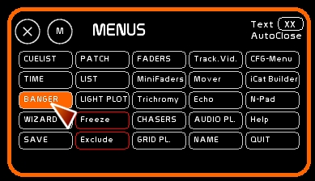
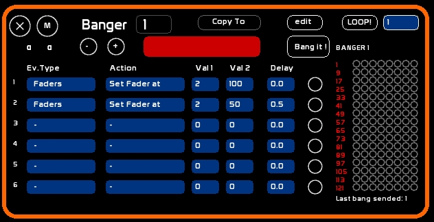
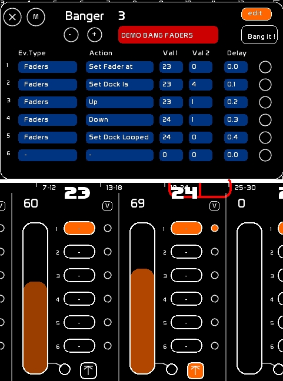
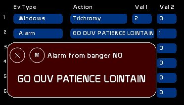
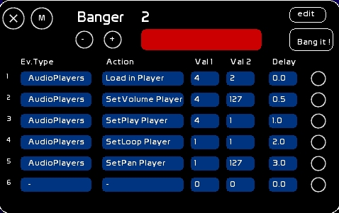
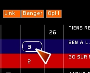
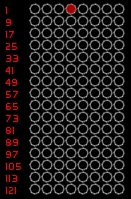
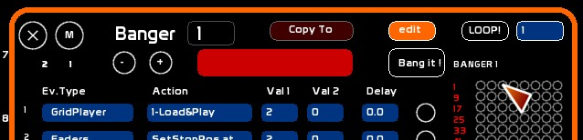

The main goal of the Banger is to create autonomous series of events, sent by a click, or a GO (when the banger is recorded inside a memory).
So we are mainly talking about triggering events.
The Banger is very simple to use and very powerful. You can, from inside your Cuelist, remotely trigger a lot of things.
White Cat contains 127 Bangers.
Each Banger can have 6 events.
You can trigger the following events, while White Cat is processing cues and doing other things:
There are several approaches:
The 127 bangers may be called at will without restrictions:
If banger 1 is running, you can also launch 6 and 127, for example, or whatever, depending only on their content.
! Be aware, while programming a banger:
you should make sure the events are done one after one, with an increasing delay time: If event 1 is sent after a delay of 1.5 second, it is recommended that other events be delayed as follows: event 2 with a delay 1.6 second event 3 with a delay 1.7 second
programming event 5 at delay 1.6 may kill in certain situations event 2 at delay 5.5.
loading an audio file needs to be done before playing it
To navigate through the 127 Bangers:
To edit the name of a banger and program it, set [EDIT] to ON by clicking it
To give a short description to the selected Banger:
Each event may be of a different type.
The main categories of events are:
To create an event, just select one of those categories:
click Ev.Type box, until the type of event is the one you need.
Each type of event proposes specific actions, with dedicated parameters.
Actions are editable, such as types, by clicking the action box, until you find the desired action.
From Version 0.8.3 onward: mouse wheel allows you to quickly change the values of EV. Type and Action.
Val1 Val2 are the values of the actions. The meaning of Val1 and Val2 change depending on the types and actions to be performed.
Delay is a time expressed in seconds, enabling a hierarchy for triggering the bangers. Delay is express in seconds only: 1.5 is 1 second and 5 tenth of a second, 120 is two minutes.
To edit Val1, Val2 or Delay, be sure that [EDIT] is ON, type a value , click the Value or the Delay box.
In the following tables, you will see Go Back information. If a cross (X) is set, this feature is enabled:
This Go Back is done CUT (instantly), with no delay time considerations.
Faders category enables mostly all actions that can be done on ONE Fader.
Programming values on the actions (Val2)are of 2 different types:
| Action | Val2 | Descripton | Go Back |
| Lock | 0-1 | Off (0) / On (1) lock | X |
| Up | 0-1 | Off (0) / On (1) UP Fader | X |
| Down | 0-1 | Off (0) / On (1) DOWN Fader | X |
| Saw | 0-1 | Off (0) / On (1) SAW Fader | X |
| To Prev.Dock | 0-1 | Off (0) / On (1) Prev.Dock mode | X |
| To Next Dock | 0-1 | Off (0) / On (1) Next Dock mode | X |
| Up/Down Loop | 0-1 | Off (0) / On (1) Go and GoBack mode | X |
| Set Dock looped | 0-1 | Off (0) / On (1) Loop the actual selected dock | X |
| Set All looped | 0-1 | Off (0) / On (1) Loop all Docks | X |
| Set Dock Is | 1-6 | Select the dock of the fader to be active | X |
| Set LFO at | 0-127 | Set acceleromater speed at position ( 64= normal speed) | X |
| SetStopPos At | 0-100/0-255 | Set Stop level at the desired level | |
| StopPos On | 0-1 | Off (0) / On (1) StopPos mode | |
| Set Fader At | 0-100/0-255 | Set the fader to the specified level | X |
| Paste to Seq. | 0-1 | Copy dock contents to on stage buffer (cue list space in blue) | no |
| Fader MidiOut | 0-1 | Off (0) / On (1) fader midi out | X |
| All:Faders at 0 | - | All 48 faders to zero | X |
| All:Speed at 0 | - | All 48 accelerometers to zero | X |
| All:Lock at 0 | - | All Locks of the 48 faders to zero | X |
| All:LFO at 0 | - | All LFOs of the 48 faders to zero (up down saw) | X |
| All:Loop at 0 | - | All Loops of the 48 faders to zero | X |
| All:ALL at 0 | - | All 48 faders to zero | X |
| All:MidiOut at 0 | - | All midi outs of the 48 faders to zero | X |
| All:RECALL | - | Recall the state of the 48 faders before setting All at 0 | no |
| Lock Preset | 0-1 | Val2 deactivate (0) / Active (1) the chosen lock preset (Val1) | X |
| Fader: Set Curve | 1-16 | Assign a curve Val2 to fader Val1 | X |
| Load Chaser | 1-128 | Load a chaser in the selected dock of a fader | no |
| Play Chaser | 0-1 | Play (1) or not (0) the chaser in the active dock, if this one contains a chaser | X |
| Seek Chaser | - | Seek to Begin step the chaser, if the active dock contains a chaser | X |
| Loop Chaser | 0-1 | Set in Loop (1) or not (0) step the chaser, if the active dock contains a chaser | X |
| Autol.Chaser | 0-1 | Set Autolaunch (1) or not (0), is the active dock contains a chaser | X |
| Set DCH. | 1-512 | Puts the fader Val1 in Direct Channel mode, with channel Val2 | X |
| SetCH Full | 1-512 | Puts the channel Val2 on fader Val 1 to Full | X |
| SetCH 0 | 1-512 | Puts the channel Val2 on fader Val 1 to zero | X |

We will go from the following state:
So, paying attention to the rules we have described at the beginning of this page:
The midi signal is sent to the specified outputs defined in Midi CFG.
By using it from a banger, you may program the remote control of third party software (audio or video or whatever) from the CueList or a manual bang. Generally those events are triggered by a Key-on signal, but certain software, such as SeqCon asks for a Ctrl-Change.
Concerning Go Back, the signal sent depends on the activation of the midicheat in midi options (Key-Off= Key-On Vel=0).
| Action | Val1 | Val2 | Description | Go Back |
| Key-On V:127 | Ch.Midi | Pitch | Sends Key-On a value 127 | midicheat=0: sends Key-Off Vel:127 |
| midicheat=1: sends Key-On Vel:0 | ||||
| Key-On V:0 | Ch.Midi | Pitch | Sends Key-On at value 0 | sends Key-On Vel:0 |
| Key-Off V:127 | Ch.Midi | Pitch | Sends Key-Off at value 127 | sends Key-On Vel:127 |
| Ctrl-Change V:127 | Ch.Midi | Pitch | Sends Ctrl-Change at value 127 | sends Ctrl-Change Vel:0 |
| Ctrl-Change V:0 | Ch.Midi | Pitch | Sends Ctrl-Change at value 0 | sends Ctrl-Change Vel:127 |
| Ctrl-Change Ch Midi: | Pitch | Velocity | Sends Ctrl-Change at pitch and chosen values. The action type defines the Midi Channel | - |
| Set Faders/Sp Out | - | 0-1 | On(1) or Off (0) midi sending out from faders and their accelerometers | - |
| Set ChasersTr Out | - | 0-1 | On(1) or Off (0) midi sending out from tracks in the chasers window | - |
| Re-emit ALL Out | - | - | Refresh all midi sends at once ( depending on midi out caps) | - |
Banger is a triggering events module, which means that banger is triggering on/off events, and there are no time based variations.
Trick: If you want to make a Ctrl-Change execute fades (like a video bus or a midi shutter, or any master in other software):
It is possible to open or close the different windows in White Cat from a Banger, configuring your workspace independent of the CueList or your manual calls.
| Action | Val1 | Val2 | Description | Go Back |
| CueList | - | 0-1 | Close (0) / Open (1) Cuelist window | X |
| Fader space | number of the fader to change | 0-1 | Close (0) / Open (1) Faders Space window | X |
| Minifaders | - | 0-1 | Close (0) / Open (1) Minifaders window | X |
| Banger | number of the banger to change | 0-1 | Close (0) / Open (1) Banger window | X |
| AudioPlayers | - | 0-1 | Close (0) / Open (1) AudioPlayers window | X |
| Time | - | 0-1 | Close (0) / Open (1) Time window | X |
| Plot | - | 0-1 | Close (0) / Open (1) Plot window | X |
| List | - | 0-1 | Close (0) / Open (1) List window | X |
| Trichromy | 1 to 8 color preset | 0-1 | Close (0) / Open (1) trichromy window | X |
| Video-tracking | 1 to 5 video preset | 0-1 | Close (0) / Open (1) tracking video window | X |
| Chasers | number of the chaser to change | 0-1 | Close (0) / Open (1) Chasers window | X |
| GridPlayers | - | 0-1 | Close (0) / Open (1) GridPlayers window | X |
| Draw | number of the matrix to change ( 1 to 6 ) | 0-1 | Close (0) / Open (1) Draw window | X |
| Echo | number of the echo to change ( 1 to 12 ) | 0-1 | Ferme (0) / Open (1) ECHO window | X |
| Mover | - | 0-1 | Close (0) / Open (1) Mover window | X |
| NumPad | - | 0-1 | Close (0) / Open (1) NumPad window | X |
| CFG | - | 0-1 | Close (0) / Open (1) CFG MENU window | X |
| iCAT | - | 0-1 | Close (0) / Open (1) iCAT Builder window | X |
Using these bangers you can configure and automate the workspace.
Alarm is a special window, just for memo and reminder needs. For example, let's say you are forgetting that at 3:45 after a Go to set play of your Minidisc player and give the TOP to stage craft: the Alarm is there precisely to remind you.
Assigning a text:
Be aware there is only ONE Alarm TEXT per banger recordable in a banger !
| Action | Val1 | Val2 | Description | Go Back |
| Alarm | - | 0-1 | Close (0) / Open (1)alarm text of the selected banger | X |


Values programmed to actions (Val2) are of 2 types:
Be aware that those actions are performed ONLY if a player is loaded with a valid audio file. You can't set values to a player if it contains no audio file.
| Action | Val1 | Val2 | Description | Go Back |
| Load in Player | 1>4 | file number (1-127) | load in Player Val1 File number Val2 | reload previous file before bang if there was |
| SetPlay Player | 1>4 | 0-1 | Pause (0) / Play (1) | X |
| Load & Play | 1>4 | file number (1-127) | load in Player Val1 File number Val2 and od a PLay directly | reload previous file before bang if there was |
| SetLoop Player | 1>4 | 0-1 | OFF (0) / ON (1) Player's Loop | X |
| Seek Player | 1>4 | 1 | If 1, go to the beginning of the file | reload previous position before bang |
| SetVolume Player | 1>4 | 0-127 | Player level | reload previous position before bang |
| Set Cue Player | 1>4 | 0-1 | ON (0) / OFF (1) CUE mode | |
| Seek to CueIn Pl. | 1>4 | 1 | if 1 and CUE mode ON, seek to IN point | |
| SetPan Player | 1>4 | 0-127 | Pan level ( middle=64) | reload previous position before bang |
| SetPitch Player | 1>4 | 0-127 | Pitch level( normal speed=64) | reload previous position before bang |
| Prev.Track Player | 1>4 | - | Load previous audiofile | |
| Next Track Player | 1>4 | - | Load next audiofile | |
| AutoLoad Player | 1>4 | 0-1 | OFF (0) / ON (1) autoloading of audiofiles in the player | |
| AutoPause Player | 1>4 | 0-1 | OFF (0) / ON (1) autopause mode of the player | |
| SetMidiOut Player | 1>4 | 0-1 | OFF (0) / ON (1) midi out sending of the level , | X |
| pan and pitch position |
As we have mentioned before about fading midi commands, Banger is just triggering the events. To do an automated audio cross-fade you will need to assign the volume of your players to the Faders. Then use the UP/DOWN/SAW abilities, with StopPos and the Curves options of a fader.
This type is for acting on the CueList
| Action | Val1 | Val2 | Description | Go Back |
| Set Mem on Stage | mem number 0-999 | decimal after dot 0-9 | Load mem Val1.Val2 on stage | |
| Set Mem on Preset | mem number 0-999 | decimal after dot 0-9 | Load mem Val1.Val2 on preset | |
| Set Speed At | 0 - 127 | - | Set cross-fade accelerometer position ( 64=normal speed) | |
| Set Link On | 0-1 | - | OFF (0)-ON(1) LINK mode | |
| Set Banger On | 0-1 | - | OFF (0)-ON(1) BANGER mode | |
| Bang Banger n° | 0-127 | 0-1 | OFF (0)- ON(1) Banger n° Val1 | |
| Reload Stage | - | - | Reload memory onstage | |
| Reload Preset | - | - | Reload memory on preset | |
| GO | - | - | Make the Go. Enable to manipulate the Cuelist from banger | |
| Set Blind | - | 0-1 | Set Blind ON (1) or OFF (0) |
Actions quoted [Ch.Sel] are only done on the selected chaser in the Chaser Window . All others can be done for all chasers, without passing through the chaser window.
| Action | Val1 | Val2 | Description | Go Back |
| Ch.Sel IS | 1-128 | - | Select active chaser in Chaser window | no |
| Play | 1-128 | 0-1 | Play (1) Pause(0) of chaser val1 | no |
| Seek | 1-128 | - | Seek to begin step of the chaser val1 | no |
| Loop | 1-128 | 0-1 | Set in Loop (1) or not (0) chaser val1 | no |
| Way | 1-128 | 0-1 | Set Way of chaserval1 from left to right (0) or right to left (1) | no |
| Go-back | 1-128 | 0-1 | ON (1) OFF(0) Go-back way of the chaser val1 | no |
| Time Mode | 1-128 | 0-1 | Set Time Mode as Time Standard (0) or Time Join(1) chaser val1 | no |
| Slave | 1-128 | 0-1 | Set Slave (1) or not (0) chaser val1's speed to its Fader container. | no |
| Set Beg Point | 1-128 | 1-36 | Set chaser val1 begin step val2 | no |
| Set End Point | 1-128 | 1-36 | Set chaser val1 end step val2 | no |
| Set Position | 1-128 | 1-36 | Set position curser of chaser val1 to step position val2 | no |
| Toggle Track | 1-128 | 1-24 | Inverse chaser val1 ON/OFF tracks val2 state | no |
| ALL ON | 1-128 | - | Set all tracks ON chaser val1 | no |
| ON INV | 1-128 | - | Inverse all tracks ON chaser val1 | no |
| ALL OFF | 1-128 | - | All tracks OFF chaser val1 | no |
| On preset | 1-128 | 1-4 | Call for chaser val1 preset val2 ON OFF tracks states | no |
| Ch.Sel. Level Track | 1-24 | 0-127 | Set value of track val1 in the Chaser Window at level val2 | no |
MiniFaders provides a global view of the 48 faders, accessible through ([SHIFT F10]).
| Action | Val1 | Val2 | Description | Go Back |
| Select num | 1-48 | 0-1 | Select (1) unselect (0) the minifader Val1 | no |
| Select ALL | - | 0-1 | Select (1) unselect (0) all minifaders | no |
| Sel. Flash | - | 0-1 | ON (1) OFF (0) flash on selected minifaders | no |
| Sel. Tog.Lock | - | - | Toggle Lock on selected minifaders | no |
| Sel. Tog.Loop | - | - | Toogle Loop on selected minifaders | no |
| Sel. Tog.Up | - | - | Toggle UP on selected minifaders | no |
| Sel. Tog.Down | - | - | Toggle DOWN on selected minifaders | no |
| Sel. Tog.Saw | - | - | Toggle SAW on selected minifaders | no |
| Sel. Tog.AllLoop | - | - | Toggle Loop on selected minifaders | no |
| Sel. Tog.AllAt | - | - | Selected minifaders are set to 0 in their move ( UP/ DOWN / SAW), their level is set to 0, Lock is off, LFO back to normal ( 64), ToPrev Dock and ToNext Dock set to 0 | no |
| Sel. Tog.StopPos | - | - | Toggle STOPPOS on selected minifaders . Recording of StopPos position must have been done before | no |
| Sel. ToPrev | - | - | Toglle ToPrev/NextPrev on selected minifaders . If a minifader is ToNext, it became ToPrev. If its already ToPrev, ToPrev is set OFF | no |
| Sel. ToNext | - | - | Toglle ToPrev/NextPrev on selected minifaders . If a minifader is ToPrev, it became ToNext. If its already ToNext, ToPrev is set OFF | no |
| Sel. Tog.Up/Down | - | - | Toggle ( On/Off) Go-GoBack state on selected minifaders on selected minifaders | no |
| Sel. Dock - | - | - | Select before dock on selected minifaders | no |
| Sel. Dock + | - | - | Select next dock on selected minifaders | no |
| Sel. PlayChaser | - | - | Toggle the Play of an embeded chaser on selected minifaders. This is possible only if dock selected contains a chaser | no |
Thsi category concerns Fantastick-iCat, the iPod/Phone remote for WhiteCat.
| Action | Val1 | Val2 | Description | Go Back |
| Select page num | 1-8 | - | Select iCat Page number | - |
| Select page - | - | - | Select Previous Page | - |
| Select page + | - | - | Select Next Page | - |
| Refresh Page | - | - | - | - |
| Orientation | - | - | Change the orientation of the page | - |
This category concerns the Time window ( F6 ) and its Chronometer
| Action | Val1 | Val2 | Description | Go Back |
| Clear Chrono | - | - | - | - |
| Play Chrono | 0/1 | - | Play(1) or Pause(0) | - |
| Set Chrono Page | 0 to 2 | - | change screen type: 0=minutes 1=seconds 2=tenths of seconds | - |
This category manipulates channel Val1 using Val2. It contains big families, depending the operation being done in per cent values, or in Dmx range. The operation is done onstage or in blind, depending BLIND position ( CTRL-F11)
| Action | Val1 | Val2 | Description | Go Back |
| /100 At | 1 to 512 | 0-100 | Set channel Val1 at Val2, on stage or in Blind | - |
| /100 + | 1 to 512 | 0-100 | Add to channel Val1 Val2, on stage or in Blind | - |
| /100 - | 1 to 512 | 0-100 | Subtract to channel Val1 Val2, on stage or in Blind | - |
| /255 At | 1 to 512 | 0-255 | Set channel Val1 at Val2, on stage or in Blind | - |
| /255 + | 1 to 512 | 0-255 | Add to channel Val1 Val2, on stage or in Blind | - |
| /255 - | 1 to 512 | 0-255 | Substact to channel Val1 Val2, on stage or in Blind | - |
| Macro ON | 1 to 512 | 1-4 | On macro Val 2 | - |
| Macro OFF | 1 to 512 | 1-4 | Off macro Val 2 | - |
| From-To Macro1 ON | 1 to 512 | Val1 to 512 | Set ON macro 1 from ch. Val1 to ch. Val2 | non |
| From-To Macro2 ON | 1 to 512 | Val1 to 512 | Set ON la macro 2 from ch. Val1 to ch. Val2 | non |
| From-To Macro3 ON | 1 to 512 | Val1 to 512 | Set ON la macro 3 from ch. Val1 to ch. Val2 | non |
| From-To Macro4 ON | 1 to 512 | Val1 to 512 | Set ON la macro 4 from ch. Val1 to ch. Val2 | non |
| From-To Macro1 OFF | 1 to 512 | Val1 to 512 | Set OFF la macro 1 from ch. Val1 to ch. Val2 | non |
| From-To Macro2 OFF | 1 to 512 | Val1 to 512 | Set OFF la macro 2 from ch. Val1 to ch. Val2 | non |
| From-To Macro3 OFF | 1 to 512 | Val1 to 512 | Set OFF la macro 3 from ch. Val1 to ch. Val2 | non |
| From-To Macro4 OFF | 1 to 512 | Val1 to 512 | Set OFF la macro 4 from ch. Val1 to ch. Val2 | non |
This category enables you to incorporate the launch of another banger inside a banger, or to rollback actions perfromed by another banger being launched.
| Action | Val1 | Val2 | Description | Go Back |
| On/Off | 1 - 127 | 0-1 | Set banger Val1 On(1) or Off(0) | - |
| RollBack | 1 - 127 | - | Set actions performed by banger Val1 to previous state | - |
| Loop ON | 1 à 127 | - | Set banger Val1 in Loop ON | non |
| Loop OFF | 1 à 127 | - | Set banger Val1 in Loop OFF | non |
This category enables you to mute a specific midi entry and to set manually your midi fader at the right level, without reporting it inside White Cat. This is designed for non-motorized control surfaces.
| Action | Val1 | Val2 | Description | Go Back |
| GLOBAL | - | 0-1 | Set all midi assignments Mute On(1) or Off(0) | no |
| GrandMaster | - | 0-1 | Set GrandMaster Mute On(1) or Off(0) | no |
| Faders | 1-48 | 0-1 | Set Fader Val1 Mute On(1) or Off(0) | no |
| LFO | 1-48 | 0-1 | Set accelerometer of Fader Val1 Mute On(1) or Off(0) | no |
| Sequential | 1-3 | 0-1 | Set Val1= 1: fader Stage / 2: fader Preset / 3: cross-fade's accelerometer Mute On(1) or Off(0) | no |
| Trichromy | - | 0-1 | Set trichromy hue's wheel Mute On(1) or Off(0) | no |
| Video Tracking | - | 0-1 | Set videotracking's decay Mute On(1) or Off(0) | no |
| Audio Level | 1-4 | 0-1 | Set level of audioplayer Val1 Mute On(1) or Off(0) | no |
| Audio Pan | 1-4 | 0-1 | Set pan of audioplayer Val1 Mute On(1) or Off(0) | no |
| Audio Pitch | 1-4 | 0-1 | Set pitch of audioplayer Val1 Mute On(1) or Off(0) | no |
This category allows you to perform actions on the 4 Gridplayers in the Grid module.
| Action | Val1 | Val2 | Descriptif | Go Back |
| 1-Load&Play | 1-127 | 1-1023 | GridPlayer 1: Load and Play Grid (Val1) Step (Val2) | non |
| 2-Load&Play | 1-127 | 1-1023 | GridPlayer 2: Load and Play Grid (Val1) Step (Val2) | non |
| 3-Load&Play | 1-127 | 1-1023 | GridPlayer 3: Load and Play Grid (Val1) Step (Val2) | non |
| 4-Load&Play | 1-127 | 1-1023 | GridPlayer 4: Load and Play Grid (Val1) Step (Val2) | non |
| 1-Stop&Load | 1-127 | 1-1023 | GridPlayer 1: Stop and Load Grid (Val1) Step (Val2) | non |
| 2-Stop&Load | 1-127 | 1-1023 | GridPlayer 2: Stop and Load Grid (Val1) Step (Val2) | non |
| 3-Stop&Load | 1-127 | 1-1023 | GridPlayer 3: Stop and Load Grid (Val1) Step (Val2) | non |
| 4-Stop&Load | 1-127 | 1-1023 | GridPlayer 4: Stop and Load Grid (Val1) Step (Val2) | non |
| Play/Pause | 1-4 | 0-1 | GridPlayer (Val1) Play (1) or Pause(0) | non |
| Seek | 1-4 | - | Seek to SeekSTep GridPlayer (Val1) | non |
| Autostop | 1-4 | 0-1 | Set Autostop mode On (1) or Off(1) in GridPlayer (Val1) | non |
| MacroGoto | 1-4 | 0-1 | GridPlayer (Val1) Macro Goto ON (1) or Off (0) | non |
| MacroSeek | 1-4 | 0-1 | GridPlayer (Val1) Macro Seek ON (1) or Off (0) | non |
| MacroStopPlay | 1-4 | 0-1 | GridPlayer (Val1) Macro StopPlay ON (1) or Off (0) | non |
| Set Seek | 1-4 | 1-1023 | Redefine Seek Step (Val2)in GridPlayer (Val1) | non |
| Set Accel. | 1-4 | 0-127 | GridPlayer (Val1) set accelerometer at (Val2). 64 = normal speed | non |
| Set Slave | 1-4 | 0-1 | Slave or not (1 or 0 )GridPlayer (Val1) to Fader's accelerometer that controls it | non |
| Snap Fader | 1-4 | 1-48 | Copy in the activ step of the GridPlayer (Val1) what is coming out from Fader (Val2) | non |
| Next Step | 1-4 | - | Next step cut GridPlayer (Val1) | non |
| Previous Step | 1-4 | - | Prev step cut GridPlayer (Val1) | non |
| Goto=Seekstep | 1-4 | - | Set the GOTO of the actuel step with the value of the seek step | non |
| Define Seekstep | 1-4 | - | Set actual step as seek step | non |
| Clear Seekstep | 1-4 | - | Erase all Seeks points of the Grid loaded inside the GridPlayer | non |
This category is dedicated to hardware managment
| Action | Val1 | Val2 | Description | Go Back |
| Arduino On/Off | 0-1 | 0-50 | On (Val1=1) or Off (Val1=0) arduino on COM port Val2 | non |
| Arduino Baudrate | - | 300, 1200, 2400, 4800, 9600, 14400, 19200, 28800, 38400, 57600, ou 115200 | Set baudrate communication (Val2) to the arduino | non |
This category enables keyboard emulation, enabling you keyboard macros, or to pilot thuth the arduino and its Bang! function all the function of WhiteCat.
| Action | Val1 | Val2 | Descriptif | Go Back |
| Emulate Kbd | - | - | All working keys in WhiteCat( letters, numbers, shift, ctrl, F1 … etc… | no |
| Action | Val1 | Val2 | Descriptif | Go Back |
| Select Matrix | 1 à 6 | - | Sélectionne dans la fenêtre Draw la matrice Val1 | non |
| Set Brush | 1 à 6 | 1 à 12 | Mets dans la matrice Val1 le pinceau à Val2 | non |
| Set DrawMode | 1 à 6 | 0 à 3 | Mets la matrice Val1 en mode [DRAW]=0, [ERASE]=1, [SOLO]=2, [GHOST]=3 | non |
| Set Pressure | 1 à 6 | 0 à 127 | Définit le niveau de pression du pinceau dans la matrice Val1 ( Val2= valeur midi ) | non |
| Set Angle | 1 à 6 | 0 à 127 | Définit le niveau du pinceau dans la matrice Val1 ( Val2= valeur midi ) | non |
| Set Size | 1 à 6 | 0 à 127 | Définit le niveau de la taille du pinceau dans la matrice Val1 ( Val2= valeur midi ) | non |
| Set Ghost | 1 à 6 | 0 à 127 | Définit le niveau d'effacement dans la matrice Val1 ( Val2 de Ghost= valeur midi ) | non |
| Snap Fader | 1 à 6 | 1 à 48 | Recopie dans la matrice Val1 les niveaux issus du Fader Val2 | non |
| Snap GridPl. | 1 à 6 | 1 à 4 | Recopie dans la matrice Val1 les niveaux en cours dans le GridPlayer Val2 | non |
| Action | Val1 | Val2 | Descriptif | Go Back |
| Select Echo | 1 à 24 | - | Sélectionne dans la fenêtre Echo le preset Val1 | |
| S.Set Fader | 1 à 48 | - | Pointe l'écho sélectionné dans la fenêtre Draw vers le Fader Val.2 | |
| S.ChanMode | - | 0-1 | Mets le mode de manipulation de circuits en mode CH.LEVEL ( Val2=0 ) ou CH.GROUND ( Val2= 1) | |
| S.SetChan /255 | 1-512 | 0-255 | Mets fonction du mode de manipulation des circuits (CH.LEVEL/CH.GROUND) le circuit Val1 à Val2 | |
| S.SetChan /100 | 1-512 | 0-100 | Mets fonction du mode de manipulation des circuits (CH.LEVEL/CH.GROUND) le circuit Val1 à Val2 | |
| Echo Mode | - | 0-1 | Mets l'écho sélectionné en Echo Mode ON (1) ou OFF (0) | |
| S.SnapFader | - | - | Capture le fader pointé par l'écho sélectionné | |
| S.Bounce ! | - | - | Lance ou Pause le bounce de l'écho sélectionné | |
| S.S-K-B ! | - | - | Capture le fader pointé par l'écho sélectionné, mets le fader à 0, lance le Bounce | |
| S.Backfader | - | - | Remets à son niveau avant le bounce le fader pointé par l'écho sélectionné | |
| S.SetGravity | - | 0-127 | Défini le niveau de gravité ( chiffres en rouge ) de l'écho sélectionné | |
| S.SetMass | - | 0-127 | Défini le niveau de masse des circuits ( chiffres en rouge ) de l'écho sélectionné | |
| S.SetEnergy | - | 0-127 | Défini le niveau d'énergie appliquée au Bounce ( chiffres en rouge ) de l'écho sélectionné | |
| S.SetChanPos | - | 1-512 | Positionne l'affichage de l'écho sélectionné en circuit Val2 |
| Action | Val1 | Val2 | Descriptif | Go Back |
| E.Echo Mode | 1-24 | 0-1 | Set Echo Val1 in Echo Mode ON (1) or OFF (0) | |
| E.Set Fader | 1-24 | 1-48 | Set echo Val1 to Fader Val2 | |
| E.SnapFader | 1-24 | 1-48 | Capture values outputted by fader Val2 in echo Val1 | |
| E.Bounce ! | 1-24 | - | Play/Pause bounce de l'écho Val1 | |
| E.S-K-B ! | 1-24 | - | Capture fader Val2 in Echo Val1, set fader at 0, do Bounce | |
| E.Backfader | 1-24 | - | Recall fader pointed by echo Val1 to its level before bounce | |
| E.ChanMode | 1-24 | 0-1 | Set Mode of echo Val1 in CH.LEVEL ( Val2=0 ) ou CH.GROUND ( Val2= 1) | |
| E.SetGravity | 1-24 | 0-127 | Set gravity in Echo Val1 at level Val2 | |
| E.SetMass | 1-24 | 0-127 | Set mass in Echo Val1 at level Val2 | |
| E.SetEnergy | 1-24 | 0-127 | Set energy for bounce in Echo Val1 at level Val2 | |
| E.SetChanPos | 1-24 | 1-512 | Set Channel view of echo Val1, begining with channel Val2 | |
| E.ClearEcho | 1-24 | - | Reset echo Val1 |
To record a banger in a memory:
If BANGER mode is ON, the banger is sent when GO is triggered. It can also be sent by quick navigation action (clicking on [Stage-]/[Stage+] or using [CTRL-W]/[CTRL-X], this all without delays.
In Go-Back, already sent events will be instantly returned to their previous state (no time calculation for the moment)
At the moment (v.0.7.5) the speed of the cross-fader is not affected by the bangers.
To clear a Banger assigned to a memory: type 0 and load banger 0 inside the banger box of the memory.

Bang it, the 6 solo event senders and + - navigations are midi assignable, which means you can use only a 3 keys midi surface and manipulate a lot of macros from it, or use the banger system and the 6 keys to trigger personal actions.
See Midi Configuration and Midi Assignments .

This general view enables you to visualize which Banger has been sent.
A click on an already sent banger (flashing in red) will do the equivalent of a go back.
To have access to the go-back function (re-launching a banger) there is a stay on time that the user may specify. Sometimes all the bangs are happening in less than a seconds, which is annoying when you have to go back to the beginning.
If you have manually sent a banger from *Bang it!*, it is the time limit defined in Bang Stay-on Time (*[CFG Menu] > General*) that will be used to access to Go Back:
If you set Stay-On time at 3 (seconds), any banger sent manually will have a minimum time of execution of 3 seconds.
If its events are delayed more than 3 seconds, the global time of a banger will take precedence and be its highest time of delay.
This also works the same way with Bangers sent from the CueList, by a GO.
version 0.8.3.1
You can copy the contents of the selected banger in the Banger window to another banger in the Banger Shortcut window.
To do this:
